Workshop Projects and Stories
A closer look at servicing, repair work and the attention to detail that goes into every job.
VW Golf Mk6 1.2TSi Overheating Solved
This is the cover story of a Golf overheating but only after driving some distance or at speed. Failed head gasket diagnosed through presence of exhaust gases in coolant. Unfortunately, as the car had been allowed to overheat the cylinder had had warped requiring a minor skim. New gasket set followed plus a new water pump, of course, and while the car was in the workshop a new timing chain kit was also fitted. The car starts without any rattles whatsoever and overheating problem solved.
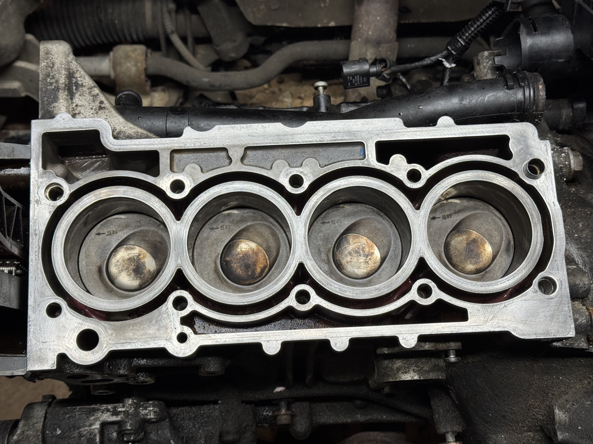
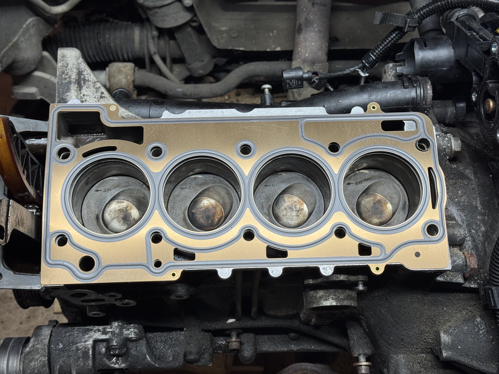
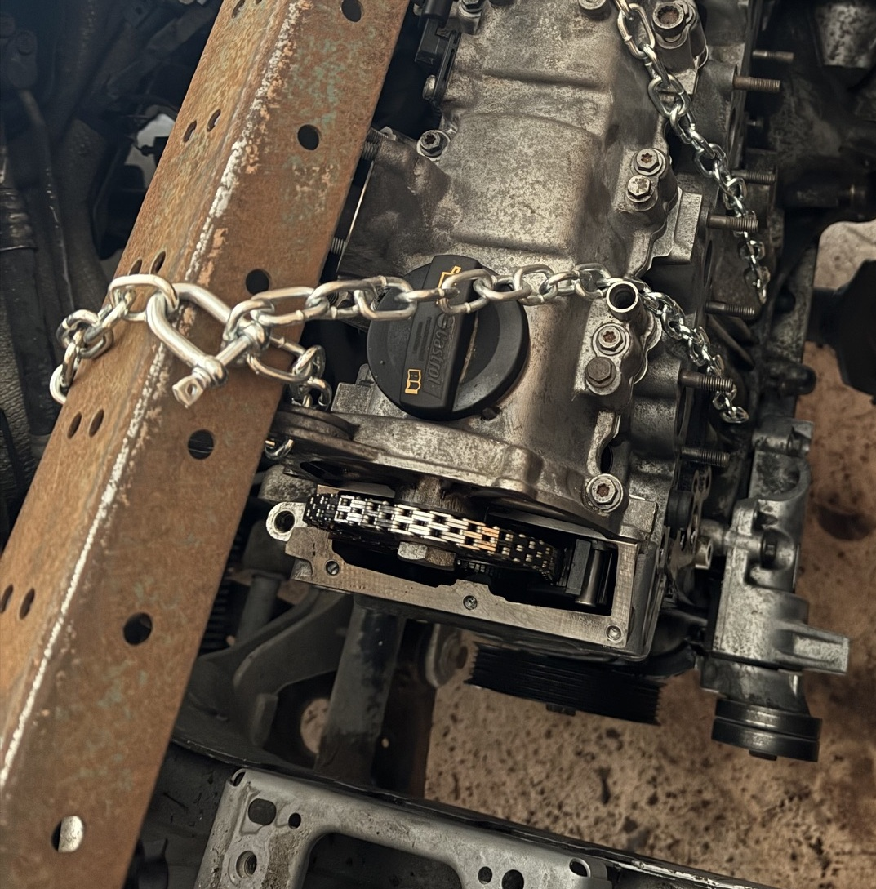
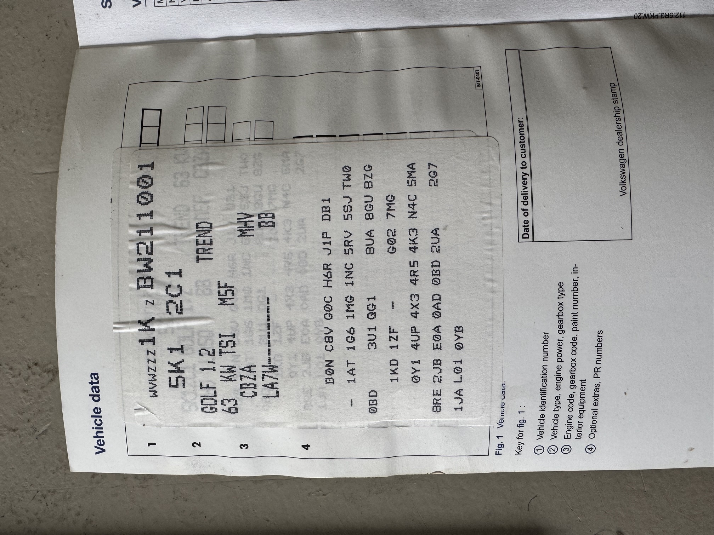
A couple of tips for this job: the timing cover is held in place with aluminium bolts. These WILL break. Make sure you get a kit that includes replacements or use stainless like I did. VW switched suppliers during the the manufacturing period - use the vehicle data (found on the boot floor or inside the handbook cover) to make sure you order the correct parts and avoid fettling with gaskets, etc. during re-assembly.
Alfa Selespeed Unit Replacement
I'll write up a full story on the Alfa Romeo Selespeed unit but here's a summary of replacement, together with the high pressure accumulator. If the pump is constantly running, or maybe the car drops into neutral frequently, it's time to look at one of the solenoids (often the one operating the clutch) or the accumulator. Although just one solenoid had failed, I was lucky enough to find a brand new selespeed unit and added a new accumulator at the same time. After self-test and calibration, gear changes are smooth and precise. Happy Days!

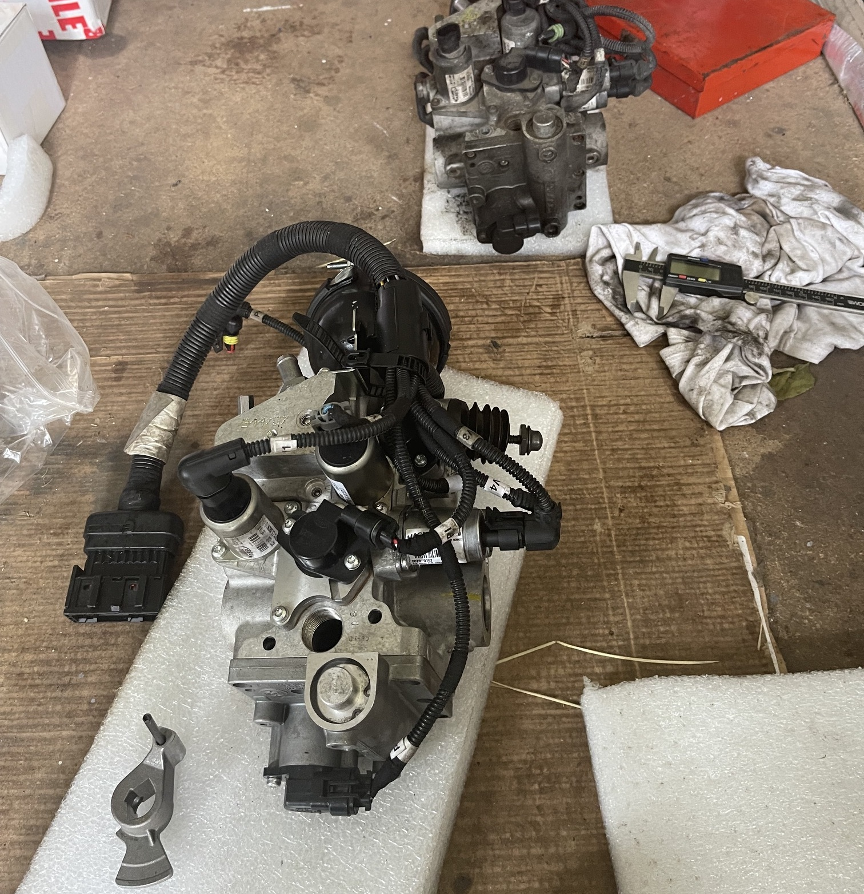
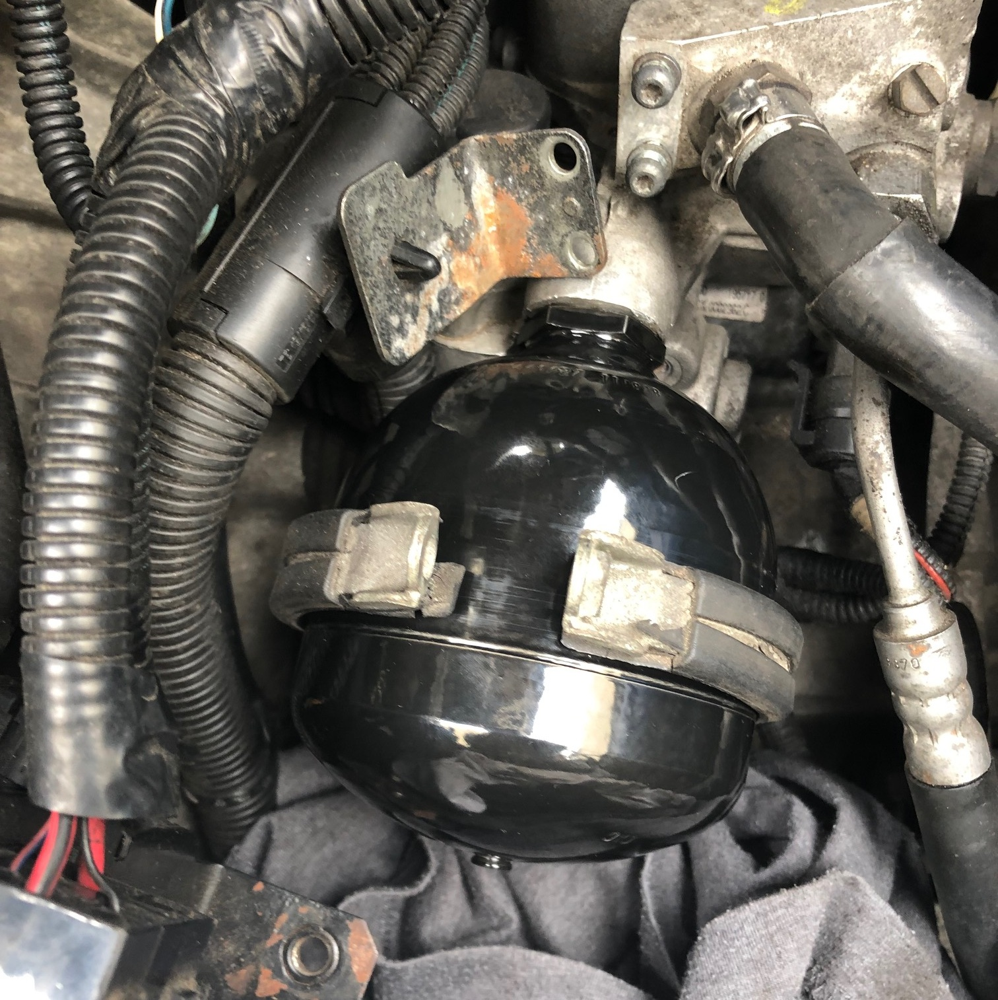
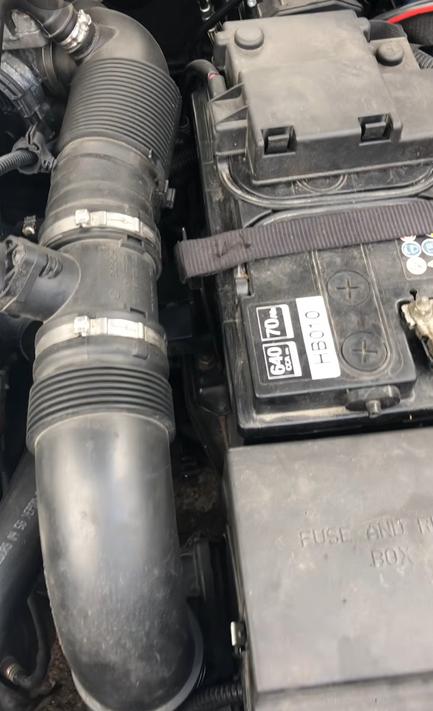
▶Make sure to de-pressurize the Selespeed system before working on any component as the oil is under extremely high pressure and will easily penetrate skin.
Volkswagen ID.3 Charge Flap Solenoid Replacement
Vehicle arrived with the charge flap stuck closed. The flap could only be opened by repeatedly locking and unlocking the vehicle to gain access to the failed actuator. This is a common problem across the ID range caused by water getting into the actuator leading to corrosion. Thankfully a fairly simple fix and not too expensive.

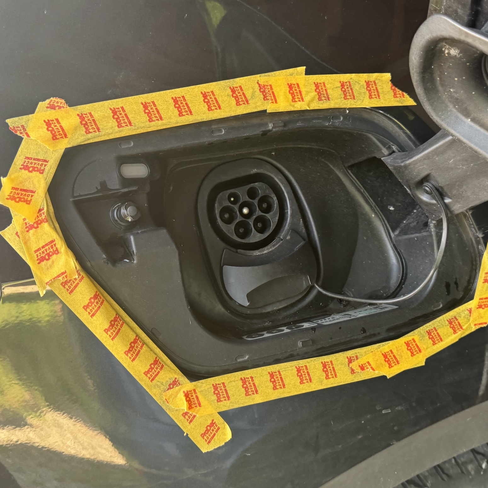


When releasing the charging assembly, note the little indentations in the moulding. These show where the holding tabs are located. Apply pressure here to avoid breaking the plastic retaining tabs as they're quite brittle.
Tasty big-brake upgrade
A set of nice 4-pot Brembo calipers refurbished with new pistons, seals, bleed nipples, shims and cross-over pipes. Finished with some new decals and installed with matching large discs and new stainless braided hoses. Very satisfying!
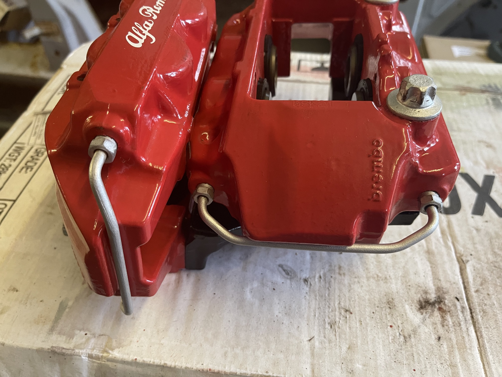
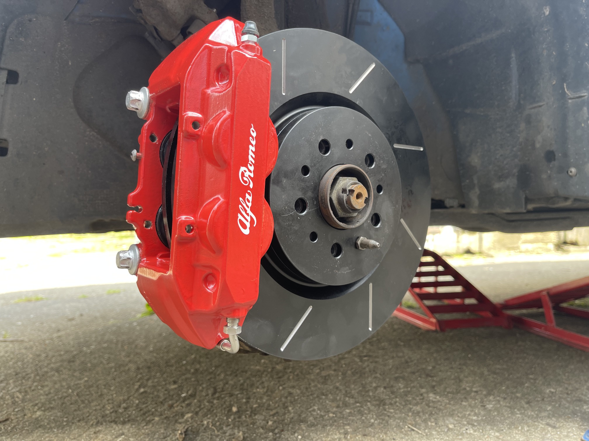
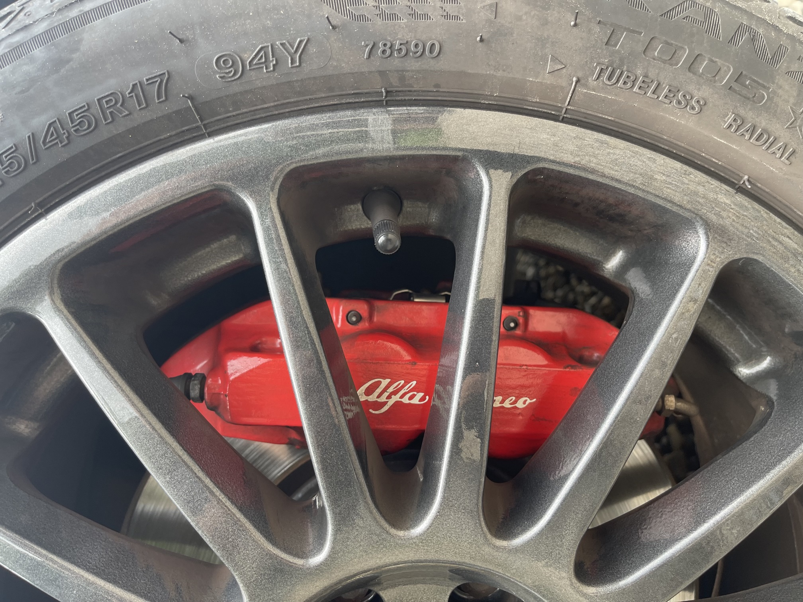
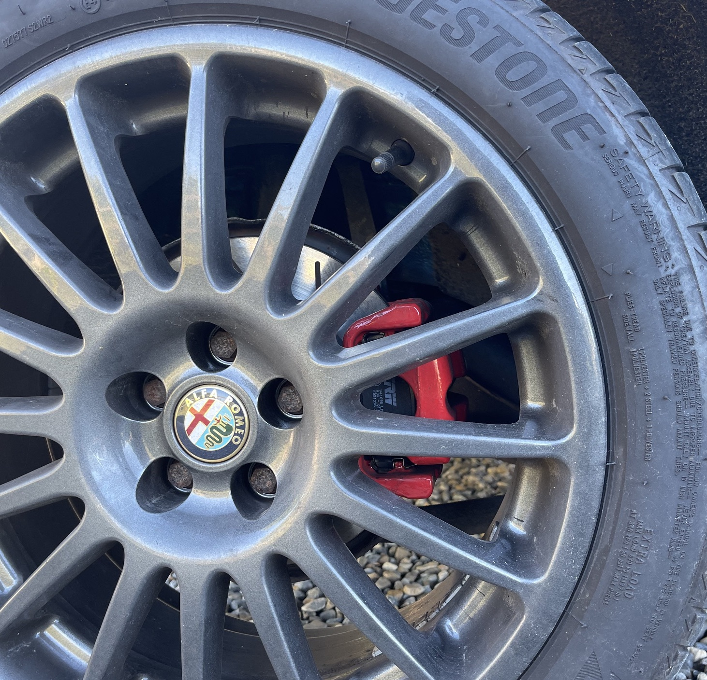